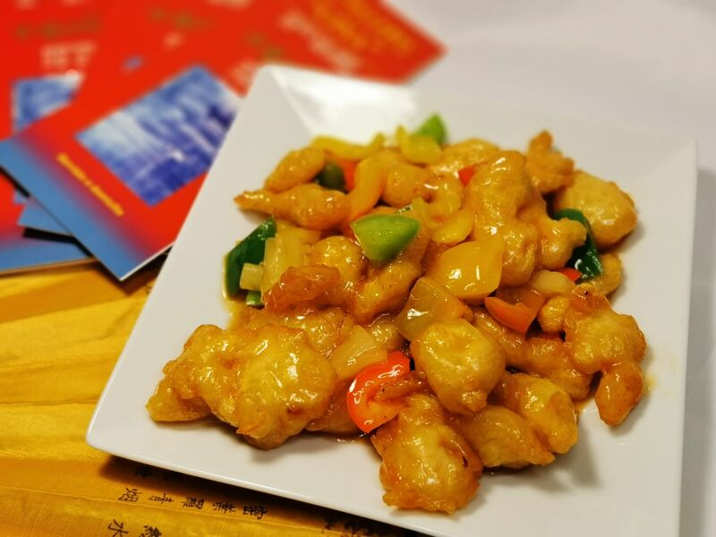
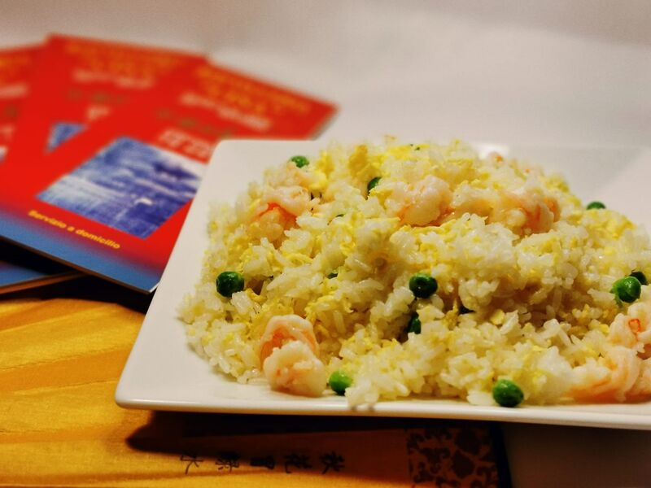
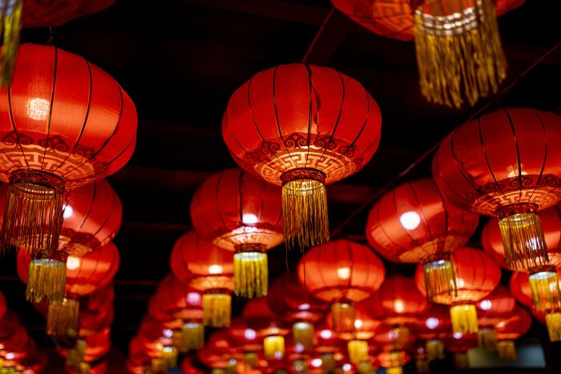
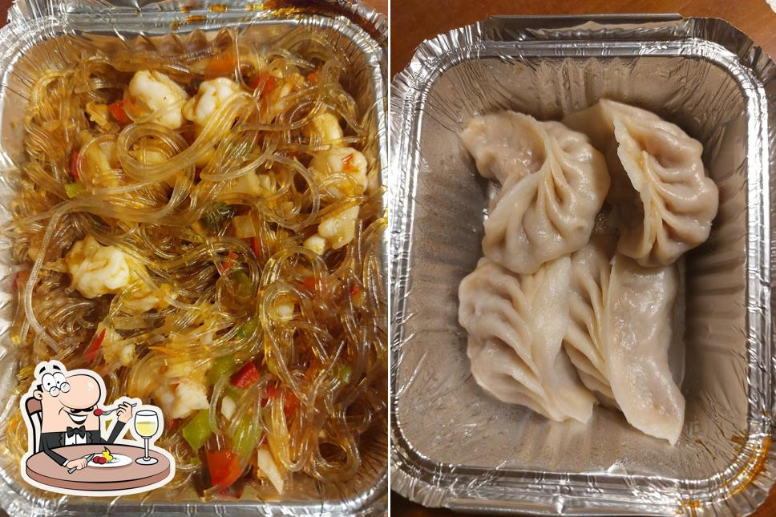
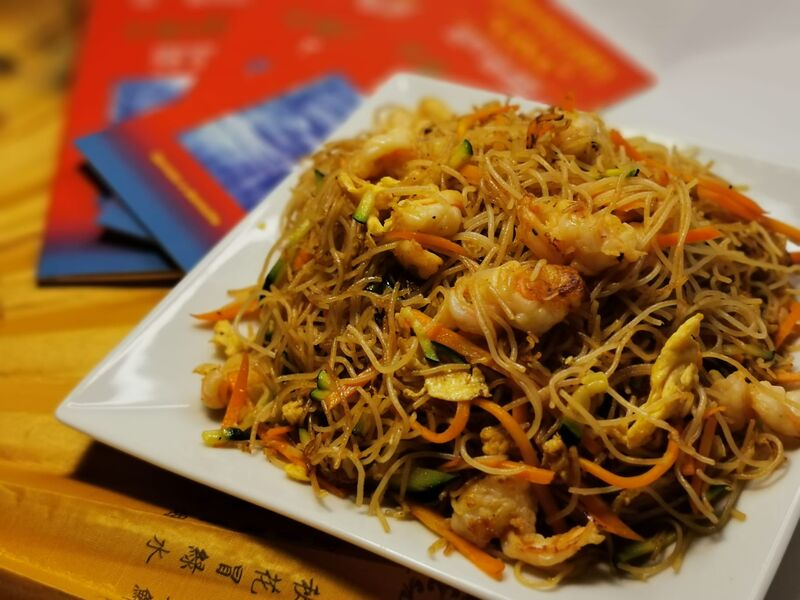
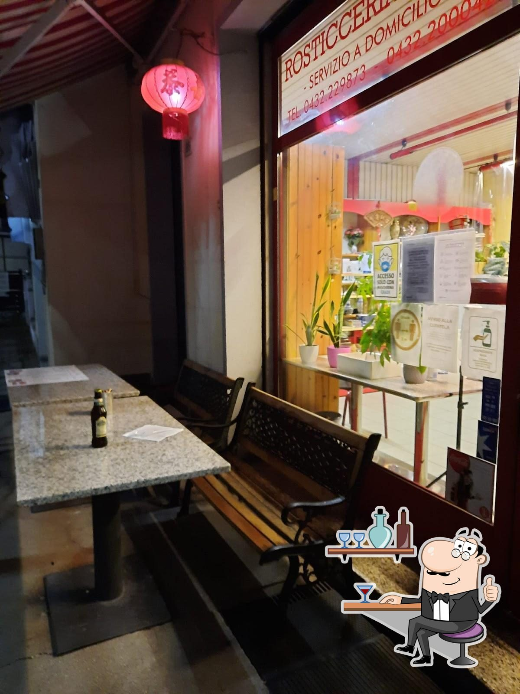

UDINE · DAL SAPORE AUTENTICO
Un viaggio di sapori,
proprio qui a Udine.
La tradizione cinese, preparata con cura e amore. Da asporto o direttamente a casa tua.
10:30–14:30 · 17:30–22:30
BENVENUTI · 歡迎
La Cina, a casa tua.
Volete mangiare i piatti della tradizione cinese comodamente a casa vostra? La Rosticceria Cina è il posto giusto. Nel nostro locale troverete una vasta scelta di piatti buonissimi, preparati con cura e amore.
Potete ordinare i piatti e venire a prenderli oppure farveli consegnare direttamente a casa vostra. Il nostro servizio di delivery è rapido: approfittatene!
Scopri tutte le specialità →
UNA SCELTA SEMPLICE
Menù fissi, gusto assicurato.
Componi il tuo menù preferito scegliendo il secondo. Disponibile anche con supplemento per alcune specialità.
Componi il tuo ordine →LA NOSTRA CASA
Un assaggio di Cina
Le nostre lanterne, il negozio e i piatti preparati con cura: ti aspettiamo in Via Caccia.





LE NOSTRE SPECIALITÀ
Ogni piatto,
un piccolo viaggio.
Pollo in agrodolce, spaghetti di riso con frutti di mare, riso con gamberi, ravioli, gamberoni e tante altre ricette. Lasciati conquistare dai sapori della cucina cinese.
Esplora il menùORDINA COME PREFERISCI
Ti aspettiamo, oppure veniamo noi.
Asporto e consegna a domicilio disponibili. Per informazioni e ordini, chiamaci o scrivici su WhatsApp.
IL TUO ORDINE, IN POCHI TOCCHI
Ordina qui
Aggiungi i piatti al carrello e inviaci l'ordine su WhatsApp.
Informazioni importanti
- * I prodotti contrassegnati possono essere congelati e/o surgelati.
- Dove è scritto “gamberetti” si intendono code di mazzancolle, appartenenti alla famiglia dei gamberetti.
- I totani appartengono alla famiglia dei calamari.
- Per informazioni su allergeni e ingredienti, chiedere al personale.
DOVE TROVARCI
Passa a trovarci
Siamo in Via Caccia 93, a Udine. Aperto tutti i giorni, a pranzo e a cena.
ROSTICCERIA PER ASPORTO
Rosticceria Cina
中國外賣店
Via Antonio Caccia, 93
33100 Udine (UD), Italia
Tutti i giorni
10:30–14:30 · 17:30–22:30